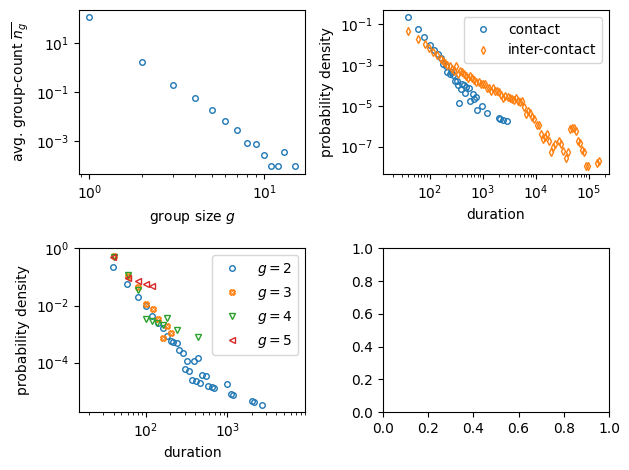

16. Temporal networks libraries#
16.1. Tacoma#
import matplotlib.pyplot as plt
import numpy as np
import tacoma as tc
from tacoma.interactive import visualize
temporal_network = tc.download_and_convert_sociopatterns_hypertext_2009()
visualize(temporal_network, frame_dt=10)
100% [..............................................................................] 67463 / 67463changing directory to /Users/maxime/.tacoma/web
starting server here ... /Users/maxime/.tacoma/web
preparing network
127.0.0.1 - - [04/May/2023 23:07:54] "GET /?data=tmp_187e897c732 HTTP/1.1" 200 -
127.0.0.1 - - [04/May/2023 23:07:54] "GET /widgets_js/widgets_white_bg.css HTTP/1.1" 304 -
127.0.0.1 - - [04/May/2023 23:07:54] "GET /css/main.css HTTP/1.1" 304 -
127.0.0.1 - - [04/May/2023 23:07:54] "GET /d3.v4/d3.v4.min.js HTTP/1.1" 304 -
127.0.0.1 - - [04/May/2023 23:07:54] "GET /custom_js/fisheye.js HTTP/1.1" 304 -
127.0.0.1 - - [04/May/2023 23:07:54] "GET /custom_js/temporalNetworkView.js HTTP/1.1" 304 -
127.0.0.1 - - [04/May/2023 23:07:54] "GET /custom_js/temporalEdgesView.js HTTP/1.1" 304 -
127.0.0.1 - - [04/May/2023 23:07:54] "GET /custom_js/temporalNetworkFigure.js HTTP/1.1" 304 -
127.0.0.1 - - [04/May/2023 23:07:54] "GET /widgets_js/widget.v3.4.js HTTP/1.1" 304 -
127.0.0.1 - - [04/May/2023 23:07:54] "GET /custom_js/temporalNetworkControlWidget.js HTTP/1.1" 304 -
127.0.0.1 - - [04/May/2023 23:07:54] "GET /img/new_logo_small_grey_rotated.png HTTP/1.1" 304 -
127.0.0.1 - - [04/May/2023 23:07:54] "GET /tmp_187e897c732_config.json HTTP/1.1" 200 -
127.0.0.1 - - [04/May/2023 23:07:54] "GET /tmp_187e897c732/tmp_187e897c732_0.taco HTTP/1.1" 200 -
127.0.0.1 - - [04/May/2023 23:07:54] "GET /tmp_187e897c732/tmp_187e897c732_0.json HTTP/1.1" 200 -
stopping server ...
was asked to stop the server
deleted all files
---------------------------------------------------------------------------
KeyboardInterrupt Traceback (most recent call last)
File ~/.pyenv/versions/python_39/lib/python3.9/site-packages/tacoma/interactive.py:368, in visualize(temporal_networks, frame_dt, time_normalization_factor, time_unit, titles, config, port, export_path)
367 while True:
--> 368 time.sleep(2)
369 except KeyboardInterrupt:
370 # thread.join()
KeyboardInterrupt:
During handling of the above exception, another exception occurred:
KeyboardInterrupt Traceback (most recent call last)
Cell In[2], line 4
2 from tacoma.interactive import visualize
3 temporal_network = tc.download_and_convert_sociopatterns_hypertext_2009()
----> 4 visualize(temporal_network, frame_dt = 10);
File ~/.pyenv/versions/python_39/lib/python3.9/site-packages/tacoma/interactive.py:373, in visualize(temporal_networks, frame_dt, time_normalization_factor, time_unit, titles, config, port, export_path)
371 print('stopping server ...')
372 server.stop_this()
--> 373 thread.join()
375 # time.sleep(1)
377 print('changing directory back to', cwd)
File ~/.pyenv/versions/3.9.13/lib/python3.9/threading.py:1060, in Thread.join(self, timeout)
1057 raise RuntimeError("cannot join current thread")
1059 if timeout is None:
-> 1060 self._wait_for_tstate_lock()
1061 else:
1062 # the behavior of a negative timeout isn't documented, but
1063 # historically .join(timeout=x) for x<0 has acted as if timeout=0
1064 self._wait_for_tstate_lock(timeout=max(timeout, 0))
File ~/.pyenv/versions/3.9.13/lib/python3.9/threading.py:1080, in Thread._wait_for_tstate_lock(self, block, timeout)
1077 return
1079 try:
-> 1080 if lock.acquire(block, timeout):
1081 lock.release()
1082 self._stop()
KeyboardInterrupt:
import tacoma as tc
from tacoma.interactive import visualize
# define temporal network as a list of edge changes
temporal_network = tc.edge_changes()
temporal_network.N = 10
temporal_network.edges_initial = [(0, 1), (2, 3), (1, 7), (3, 5), (1, 9), (7, 2)]
temporal_network.t0 = 0.0
temporal_network.t = [0.8, 2.4]
temporal_network.tmax = 3.1
temporal_network.edges_in = [
[(0, 5), (3, 6)],
[(3, 7), (4, 9), (7, 8)],
]
temporal_network.edges_out = [
[(0, 1)],
[(2, 3), (3, 6)],
]
visualize(temporal_network, frame_dt=0.05)
changing directory to /Users/maxime/.tacoma/web
starting server here ... /Users/maxime/.tacoma/web
preparing network
127.0.0.1 - - [04/May/2023 23:07:09] "GET /?data=tmp_187e897198b HTTP/1.1" 200 -
127.0.0.1 - - [04/May/2023 23:07:09] "GET /widgets_js/widgets_white_bg.css HTTP/1.1" 304 -
127.0.0.1 - - [04/May/2023 23:07:09] "GET /css/main.css HTTP/1.1" 304 -
127.0.0.1 - - [04/May/2023 23:07:09] "GET /d3.v4/d3.v4.min.js HTTP/1.1" 304 -
127.0.0.1 - - [04/May/2023 23:07:09] "GET /custom_js/fisheye.js HTTP/1.1" 304 -
127.0.0.1 - - [04/May/2023 23:07:09] "GET /custom_js/temporalNetworkView.js HTTP/1.1" 304 -
127.0.0.1 - - [04/May/2023 23:07:09] "GET /custom_js/temporalEdgesView.js HTTP/1.1" 304 -
127.0.0.1 - - [04/May/2023 23:07:09] "GET /custom_js/temporalNetworkFigure.js HTTP/1.1" 304 -
127.0.0.1 - - [04/May/2023 23:07:09] "GET /widgets_js/widget.v3.4.js HTTP/1.1" 304 -
127.0.0.1 - - [04/May/2023 23:07:09] "GET /custom_js/temporalNetworkControlWidget.js HTTP/1.1" 304 -
127.0.0.1 - - [04/May/2023 23:07:09] "GET /img/new_logo_small_grey_rotated.png HTTP/1.1" 304 -
127.0.0.1 - - [04/May/2023 23:07:09] "GET /tmp_187e897198b_config.json HTTP/1.1" 200 -
127.0.0.1 - - [04/May/2023 23:07:09] "GET /tmp_187e897198b/tmp_187e897198b_0.taco HTTP/1.1" 200 -
127.0.0.1 - - [04/May/2023 23:07:09] "GET /tmp_187e897198b/tmp_187e897198b_0.json HTTP/1.1" 200 -
stopping server ...
was asked to stop the server
deleted all files
---------------------------------------------------------------------------
KeyboardInterrupt Traceback (most recent call last)
File ~/.pyenv/versions/python_39/lib/python3.9/site-packages/tacoma/interactive.py:368, in visualize(temporal_networks, frame_dt, time_normalization_factor, time_unit, titles, config, port, export_path)
367 while True:
--> 368 time.sleep(2)
369 except KeyboardInterrupt:
370 # thread.join()
KeyboardInterrupt:
During handling of the above exception, another exception occurred:
KeyboardInterrupt Traceback (most recent call last)
Cell In[5], line 20
11 temporal_network.edges_in = [
12 [ (0, 5), (3, 6) ],
13 [ (3, 7), (4, 9), (7, 8) ],
14 ]
15 temporal_network.edges_out = [
16 [ (0, 1) ],
17 [ (2, 3), (3, 6) ],
18 ]
---> 20 visualize(temporal_network, frame_dt = 0.05)
File ~/.pyenv/versions/python_39/lib/python3.9/site-packages/tacoma/interactive.py:373, in visualize(temporal_networks, frame_dt, time_normalization_factor, time_unit, titles, config, port, export_path)
371 print('stopping server ...')
372 server.stop_this()
--> 373 thread.join()
375 # time.sleep(1)
377 print('changing directory back to', cwd)
File ~/.pyenv/versions/3.9.13/lib/python3.9/threading.py:1060, in Thread.join(self, timeout)
1057 raise RuntimeError("cannot join current thread")
1059 if timeout is None:
-> 1060 self._wait_for_tstate_lock()
1061 else:
1062 # the behavior of a negative timeout isn't documented, but
1063 # historically .join(timeout=x) for x<0 has acted as if timeout=0
1064 self._wait_for_tstate_lock(timeout=max(timeout, 0))
File ~/.pyenv/versions/3.9.13/lib/python3.9/threading.py:1080, in Thread._wait_for_tstate_lock(self, block, timeout)
1077 return
1079 try:
-> 1080 if lock.acquire(block, timeout):
1081 lock.release()
1082 self._stop()
KeyboardInterrupt:
import tacoma as tc
# Structural parameters
N = 100
k = 3
rho = k / (N - 1.0)
# Temporal parameters
tau = 4
omega = 1.0 / tau
t_run_total = 10
# Simulate
temporal_network = tc.activity_model(N, rho, omega, t_run_total)
# Draw
from tacoma.drawing import edge_activity_plot
import matplotlib.pyplot as pl
edge_activity_plot(temporal_network)
(<Figure size 640x480 with 1 Axes>, <Axes: xlabel='time', ylabel='edge id'>)
temporal_network = tc.download_and_convert_sociopatterns_hypertext_2009()
edge_activity_plot(temporal_network)
100% [..............................................................................] 67463 / 67463
(<Figure size 640x480 with 1 Axes>, <Axes: xlabel='time', ylabel='edge id'>)
from tacoma.epidemics import simulate_and_measure_i_inf
N = 100
k = 10
omega = 1.6
recovery_rate = 0.1
R0 = 10
t_run_total = 1000
AM = tc.EdgeActivityModel(N, k / (N - 1.0), omega, t0=2000)
infection_rate = R0 / k * recovery_rate
SIS = tc.SIS(
N,
t_run_total,
infection_rate,
recovery_rate,
number_of_initially_infected=N,
sampling_dt=0.0,
)
print(simulate_and_measure_i_inf(AM, SIS, t_equilibrate=900))
(0.9182171914428452, 0.010578699897420597, 9.299074256323838)
from tacoma.analysis import temporal_network_group_analysis
temporal_network_group_analysis(tc.measure_group_sizes_and_durations(temporal_network))
plt.tight_layout()

16.2. Teneto example#
G = np.random.beta(1, 1, [5, 5, 10])
G
array([[[0.57402062, 0.54533494, 0.20791902, 0.00695635, 0.51297079,
0.61350302, 0.85270946, 0.3435587 , 0.61438601, 0.81915626],
[0.31151205, 0.30938026, 0.79205626, 0.9945522 , 0.5323503 ,
0.58340113, 0.88620428, 0.71675569, 0.5676458 , 0.96927095],
[0.23698556, 0.2719122 , 0.20678179, 0.23797396, 0.00336131,
0.40332972, 0.28928546, 0.35554127, 0.53058366, 0.12707191],
[0.49106108, 0.51110897, 0.5254994 , 0.15987053, 0.15967097,
0.99717969, 0.83979635, 0.89096448, 0.933315 , 0.75547405],
[0.78769885, 0.68490429, 0.76763525, 0.28171812, 0.47635394,
0.53736867, 0.77877014, 0.42165771, 0.30875155, 0.98048573]],
[[0.00469893, 0.17236568, 0.35357433, 0.06375128, 0.20413986,
0.44948363, 0.76866154, 0.3192128 , 0.91098118, 0.69196314],
[0.40119599, 0.76512505, 0.77271785, 0.13830638, 0.67329904,
0.6487494 , 0.54182224, 0.87995467, 0.8073446 , 0.33558896],
[0.0339174 , 0.19585957, 0.38025763, 0.14223465, 0.56769456,
0.3291369 , 0.38985642, 0.6902133 , 0.62105669, 0.97665753],
[0.55110025, 0.46514615, 0.23806498, 0.64852072, 0.75485076,
0.01369021, 0.33416967, 0.72802532, 0.15861031, 0.45714861],
[0.91728785, 0.96074238, 0.8954793 , 0.47947711, 0.98321836,
0.4131319 , 0.56324821, 0.4974568 , 0.92315617, 0.12312975]],
[[0.43581309, 0.26743376, 0.42931059, 0.01627684, 0.28218966,
0.84431253, 0.59380435, 0.30763345, 0.19630325, 0.04036279],
[0.77281834, 0.02055676, 0.1617185 , 0.33276958, 0.7186253 ,
0.10095841, 0.45398785, 0.37487268, 0.12968033, 0.37869102],
[0.30599023, 0.61183015, 0.10000938, 0.16477013, 0.2169917 ,
0.55587529, 0.9394913 , 0.3864057 , 0.78419488, 0.91286023],
[0.25264537, 0.49889403, 0.30894098, 0.59125921, 0.70102364,
0.95936391, 0.14077653, 0.59653568, 0.23593374, 0.75381309],
[0.28440334, 0.69676581, 0.35693769, 0.2416662 , 0.44389514,
0.74467023, 0.14890183, 0.74670524, 0.49584491, 0.60451763]],
[[0.95069387, 0.49223619, 0.79797074, 0.71366768, 0.53300813,
0.0706614 , 0.7384361 , 0.66835611, 0.51905733, 0.26778904],
[0.37698027, 0.9193655 , 0.33017738, 0.98396569, 0.5598762 ,
0.03197155, 0.73907585, 0.10231646, 0.65513875, 0.71739058],
[0.34659705, 0.3466773 , 0.43184867, 0.64993006, 0.63960893,
0.91782733, 0.57730323, 0.65697486, 0.48287547, 0.80136029],
[0.99469196, 0.24910274, 0.58388378, 0.3466147 , 0.23859782,
0.47908551, 0.25701172, 0.39946482, 0.20329859, 0.31133839],
[0.55182575, 0.45674879, 0.46220167, 0.37199802, 0.35127643,
0.42916178, 0.96851387, 0.31539535, 0.97670548, 0.27725808]],
[[0.30788523, 0.93681792, 0.65269518, 0.459932 , 0.61372265,
0.24234545, 0.13595015, 0.63138702, 0.76267699, 0.27269339],
[0.14926245, 0.22520286, 0.47383928, 0.64176497, 0.38697097,
0.07341941, 0.9763494 , 0.1179432 , 0.44957156, 0.43517811],
[0.65037646, 0.19820148, 0.49774803, 0.74699924, 0.45936319,
0.13326252, 0.16045597, 0.24576014, 0.14989511, 0.25036462],
[0.63732963, 0.96139337, 0.58738822, 0.48666888, 0.62825943,
0.4110011 , 0.68419318, 0.48267475, 0.5045372 , 0.45319299],
[0.48480532, 0.70276373, 0.74645137, 0.36776851, 0.9525902 ,
0.62498891, 0.87686371, 0.32144902, 0.42319503, 0.75723401]]])
G[G < 0.8] = 0
G[G > 0.8] = 1
from teneto import TemporalNetwork
tnet = TemporalNetwork(from_array=G, nettype="bu", diagonal=True)
/Users/maxime/.pyenv/versions/python_39/lib/python3.9/site-packages/nilearn/input_data/__init__.py:23: FutureWarning: The import path 'nilearn.input_data' is deprecated in version 0.9. Importing from 'nilearn.input_data' will be possible at least until release 0.13.0. Please import from 'nilearn.maskers' instead.
warnings.warn(message, FutureWarning)
tnet.plot("slice_plot", cmap="Set2")
<Axes: xlabel='Time'>
import teneto as te
G_periodic = np.zeros([5, 5, 20])
ts_periodic = np.arange(0, 20, 2)
G_periodic[:, :, ts_periodic] = 1
G_periodic = TemporalNetwork(from_array=G_periodic, nettype="bu")
# G_periodic = TemporalNetwork(from_array=G_periodic)
fig = plt.figure(figsize=(20, 3))
ax = plt.subplot(111)
G_periodic.plot("slice_plot", ax=ax)
<Axes: xlabel='Time'>
ts_bursty = [1, 3, 4, 8, 9, 10, 11, 14, 18, 19]
G_bursty = np.zeros([5, 5, 20])
G_bursty[:, :, ts_bursty] = 1
G_bursty = TemporalNetwork(from_array=G_bursty, nettype="bu")
fig = plt.figure(figsize=(20, 3))
ax = plt.subplot(111)
G_bursty.plot("slice_plot", ax=ax)
<Axes: xlabel='Time'>
ts_bursty = np.random.choice(list(range(20)), size=len(ts_bursty), replace=False)
G_bursty2 = np.zeros([5, 5, 20])
G_bursty2[:, :, ts_bursty] = 1
G_bursty2 = TemporalNetwork(from_array=G_bursty2, nettype="bu")
fig = plt.figure(figsize=(20, 3))
ax = plt.subplot(111)
G_bursty2.plot("slice_plot", ax=ax)
<Axes: xlabel='Time'>
print(te.networkmeasures.reachability_latency(G_bursty))
print(te.networkmeasures.reachability_latency(G_bursty2))
1.85
2.1
print(te.networkmeasures.temporal_efficiency(G_bursty))
print(te.networkmeasures.temporal_efficiency(G_bursty2))
0.5405405405405405
0.47619047619047616
16.3. Generation of random network#
fig = plt.figure(figsize=(20, 4))
ax = plt.subplot(111)
g = TemporalNetwork(from_array=te.generatenetwork.rand_poisson(10, 40, lam=0.8))
g.plot("slice_plot", ax=ax)
<Axes: xlabel='Time'>